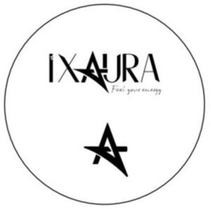

Trade Mark Journal No.2025/039 26 September 2025
WO0000001726113 (24,25,35)
Office of origin: Turkey
Date of International Registration:30 November 2022
Date of designation in the UK:
3 July 2025

- Class 24
- Woven or non-woven textile fabrics; textile goods for household use, not included in other classes; curtains of textile or plastic, bed covers, sheets (textile), pillowcases, blankets, quilts, towels; flags, pennants, labels of textile; swaddling blankets; sleeping bags for camping.
- Class 25
- Clothing, including underwear and outerclothing, other than special purpose protective clothing; socks, mufflers [clothing], shawls, bandanas, scarves, belts [clothing]; footwear, shoes, slippers, sandals; headgear, hats, caps with visors, berets, caps [headwear], skull caps.
- Class 35
- The bringing together, for the benefit of others, of a variety of goods, namely, perfumery, non-medicated cosmetics, fragrances, deodorants for personal use and animals, soaps, abrasive preparations, emery cloth, sandpaper, pumice stone, abrasive pastes, polishing preparations for leather, vinyl, metal and wood, polishes and creams for leather, vinyl, metal and wood, wax for polishing, candles, sanitary preparations for medical use, hygienic pads, hygienic tampons, plasters, materials for dressings, diapers made of paper and textiles for babies, adults and pets, deodorants, other than for human beings or for animals, air purifying preparations, air deodorising preparations, disinfectants, antiseptics, detergents for medical purposes, medicated soaps, disinfectant soaps, antibacterial hand lotions, machines for textile processing, sewing machines, industrial robots (machines) with the abovementioned functions, forks, spoons, knives and non-electric cutters, slicers, peelers for kitchen use, including those made of precious metals, tools and apparatus for personal beauty care use, tools and apparatus for shaving, depilation, manicure and pedicure, electric hand implements for straightening and curling hair, scissors, clothing for protection against accidents, irradiation and fire, safety vests and life-saving apparatus and equipment, eyeglasses, sunglasses, optical lenses and cases, containers, parts and components thereof, surgical gowns and surgical sterile sheets, lighting installations, lights for vehicles and interior-exterior spaces, jewellery, imitation jewellery, gold, precious stones and jewellery made thereof, cufflinks, tie pins, statuettes and figurines of precious metal, clocks, watches and chronometrical instruments, chronometers and their parts, watch straps, rosaries, musical instruments and cases for musical instruments, imitations of leather or other materials, designed for carrying items, bags, wallets, boxes and trunks made of leather or stout leather, keycases, trunks [luggage], suitcases, furniture, made of any kind of material, mattresses, pillows, air mattresses and cushions, not for medical purposes, water beds, mirrors, bouncing chairs for babies, playpens for babies, cradles, infant walkers, display boards, frames for pictures and paintings, identity plates, identification bracelets, name plates, identification tags, made of wood or synthetic materials, ornaments and decorative goods of wood, cork, reed, cane, wicker, horn, bone, ivory, whalebone, shell, amber, mother-of-pearl, meerschaum, beeswax, plastic or plaster namely figurines, holiday ornaments for walls, sculptures, trophies, kennels, nesting boxes and beds for household pets, bamboo curtains, roller indoor blinds [for interiors], slatted indoor blinds, vertical indoor blinds, bead curtains for decoration, curtain hooks, curtain rings, curtain tie-backs, curtain rods, hand-operated non-electric cleaning instruments and appliances, brushes, except paintbrushes, steel chips for cleaning, sponges for cleaning, steel wool for cleaning, cloths of textile for cleaning, gloves for dishwashing, non electric polishing machines for household purposes, brooms for carpets, mops, ironing boards and shaped covers therefor, drying racks for washing, clothes drying hangers, ornaments and decorative goods of glass, porcelain, earthenware or clay namely statues, figurines, vases and trophies, perfume burners, perfume sprayers, perfume vaporizers, electric or non-electric make-up removing appliances, powder puffs, toilet cases, ropes, strings, rope ladders, hammocks, fishing nets, tents, awnings, tarpaulins, sails, vehicle covers, not fitted, bags of textile, for packaging, padding and stuffing materials, except of rubber and plastics, including those of wool and cotton, yarns and threads for textile use, threads and yarns for sewing, embroidery and knitting, thread, elastic yarns and threads for textile use, woven or non-woven textile fabrics, textile goods for household use, curtains, bed covers, sheets (textile), pillowcases, blankets, quilts, towels, flags, pennants, labels of textile, swaddling blankets, sleeping bags for camping, clothing, including underwear and outerclothing, other than special purpose protective clothing, socks, mufflers [clothing], shawls, bandanas, scarves, belts [clothing], footwear, shoes, slippers, sandals, headgear, hats, caps with visors, berets, caps [headwear], skull caps, laces and embroidery, guipure lace, festoons, ribbons (haberdashery), ribbons and braid, reinforcing tapes for clothing, cords for clothing, letters and numerals for marking linen, embroidered emblems, badges for wear, not of precious metal, shoulder pads for clothing, buttons for clothing, fastenings for clothing, eyelets for clothing, zippers, buckles for shoes and belts, rivet buttons, adhesive tapes [haberdashery], fasteners, pins, other than jewellery, needles, sewing needles, needles for sewing machines, lacing needles, needles for knitting and embroidery, boxes for needles, needle cushions, carpets, rugs, mats, linoleum, artificial turf, linoleum for covering floors, games and toys, toys for animals enabling customers to conveniently view and purchase those goods, such services may be provided by retail stores, wholesale outlets, by means of electronic media or through mail order catalogues.
I DREAM TASARIM TEKSTİL SANAYİ VE TİCARET LİMİTED ŞİRKETİ
Representative: Tesla Patent Anonim Şirketi (Ersagun Alp YÜCE), Cumhuriyet Mh. Kıbrıs (150),, Sk. Edebali Sitesi A Blok No:5/18,, Nilüfer, Bursa, TURKEY